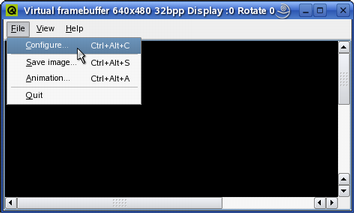
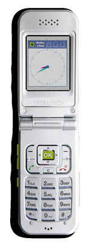
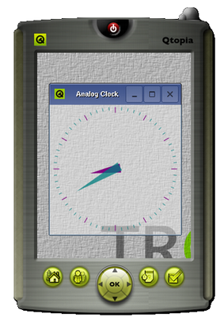
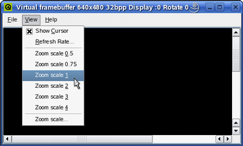

| Home · All Classes · Main Classes · Grouped Classes · Modules · Functions |
[Contents]
Qtopia Core applications write directly to the framebuffer, eliminating the need for the X Window System and saving memory. For development and debugging purposes, the Qtopia Core platform provides a virtual framebuffer allowing Qtopia Core programs to be developed on a desktop machine, without switching between consoles and X11.

The virtual framebuffer emulates a framebuffer using a shared memory region and the qvfb tool to display the framebuffer in a window. The qvfb tool is located in Qt's /tools/qvfb directory, and provides several features accessible through its File and View menus.
Please note that the virtual framebuffer is a development tool only. No security issues have been considered in the virtual framebuffer design. It should be avoided in a production environment, i.e. do not configure production libraries with the -qvfb option.
To run the qvfb tool displaying the virtual framebuffer, the Qtopia Core library must be configured and compiled with the -qvfb option:
cd path/to/Qtopia/Core
./configure -qvfb
make
Then compile and run the qvfb tool as a normal Qt/X11 application (i.e. do not compile it as a Qtopia Core application):
cd path/to/Qt/tools/qvfb
make
./qvfb
The qvfb application supports the following command line options:
| Option | Description |
|---|---|
| -width <width> | The width of the virtual framebuffer (default: 240). |
| -height <height> | The height of the virtual framebuffer (default: 320). |
| -depth <depth> | The depth of the virtual framebuffer (1, 8 or 32; default: 8). |
| -nocursor | Do not display the X11 cursor in the framebuffer window. |
| -qwsdisplay <:id> | The Qtopia Core display ID (default: :0). |
Once the virtual framebuffer (the qvfb application) is running, it is ready for use: Start a Qtopia Core master application (i.e. construct a QApplication object with the QApplication::GuiServer flag or use the -qws command line parameter. See the Running Applications documentation for details). For example:
cd path/to/Qtopia/Core/examples/widgets/analogclock
make
./analogclock -qws
Note that as long as the virtual framebuffer is running and the Qtopia Core library supports qvfb, Qtopia Core will automatically detect it and use it by default. Alternatively, the -display option can be used to specify the virtual framebuffer driver. For example:
cd path/to/Qtopia/Core/examples/widgets/analogclock
make
./analogclock -qws -display QVFb:0
Warning: If qvfb is not running (or the current Qtopia Core library doesn't support it) and the driver is not explicitly specified, Qtopia Core will write to the real framebuffer and the X11 display will be corrupted.

The File menu allows the user to configure the virtual framebuffer display (File|Configure...), save a snapshot of the framebuffer contents (File|Save Image...) and record the movements in the framebuffer (File|Animation...).
When choosing the File|Configure menu item, the qvfb tool provides a configuration dialog allowing the user to customize the display of the virtual framebuffer. The user can modify the size and depth as weel as the Gamma values, and also select the preferred skin (i.e. making the virtual framebuffer simulate the target device environment). In addition, it is possible to emulate a touch screen and a LCD screen.
| Target Device Environment The qvfb tool provides various skins for the virtual framebuffer allowing the user to view their application in an environment similar to their target device. The provided skins are:
|  |  |
Note that when configuring (except when changing the Gamma values only), any applications using the virtual framebuffer will be terminated.

The View menu allows the user to modify the target's refresh rate (View|Refresh Rate...), making qvfb check for updated regions more or less frequently.
The regions of the display that have changed are updated periodically, i.e. the virtual framebuffer is displaying discrete snapshots of the framebuffer rather than each individual drawing operation. For this reason drawing problems such as flickering may not be apparent until the program is run using a real framebuffer. If little drawing is being done, the framebuffer will not show any updates between drawing events. If an application is displaying an animation, the updates will be frequent, and the application and qvfb will compete for processor time.
The View menu also allows the user to zoom the view of the application (View|Zoom *).
[Contents]
| Copyright © 2006 Trolltech | Trademarks | Qt 4.1.3 |